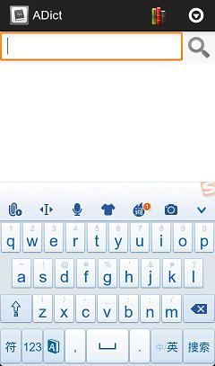
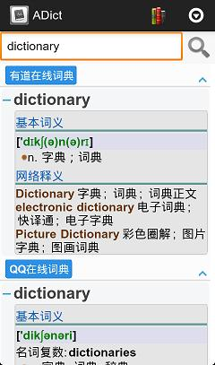

软件特性
- 能使用电脑字典软件StarDict的字典库，包括牛津现代英汉双解词典、朗道英汉字典，可提供详尽字词解释、词性、例句等，比起翻字典方便得多；
- 词条解释页面简洁美观，操作便利；
- 修正大部分词库中音标显示问题；完美音标呈现；
- 极速查询；支持无限量词库；
- 纯Java编写，支持多种CPU，再无硬件设备限制；
- 支持javascript扩展，支持深度定制；此软件在查询结果显示时采用web技术，您可以使用Javascript和css对查询结果进行充分定制，添加裁剪部分功能，修改UI显示，使之成为一款真正属于自己的电子词典；
软件截屏
| 单词查询 |
|  |
| 词库管理 |
|  |
软件由来
我在开发《逆向巧学VOA》软件的时候，我希望能够找到一款能够方便用户对单词进行详细查询的电子词典。在先后试过多款电子词典后，我最终却失望的发现这些均不能满足我的要求。
有的要求用户先在词典中进行设置；有的只能弹出一个简单翻译窗口，而且关闭按钮小小的，对用户来说很难关闭；有的则是音标显示错误，即使所谓的音标完美版；
如果能有一款真正好用而且可以定制的电子词典多好！
基于此，我决定开发一款电子词典软件并贡献出来。这款软件应该具有如下特点：免费、开源、采用常见离线词库、单词查询速度理想、可扩展性好。这就是ADict，——A dictionary on Android。希望诸位喜欢这款软件并且参与这个开源项目的开发！
ADict之理想
希望ADict能够成为Android开源软件中一款代表软件，能够代表中国开源软件力量。
加入Adict开发队伍
首先感谢您来到ADict网站！
如果您对这个项目感兴趣，想成为ADict开发者中的一员，请给我发Email。我很期待您的参与。
您也可以将软件使用过程中的问题和建议通过Email发给我。您的问题和建议也是参与项目的一种形式，对这个项目也是非常宝贵的。
作者
作者是资深软件工程师，精通C、C++、Java、Python、PHP、Javascript等多种语言，参与带领过多个软件开发项目，包括Android软件开发、PHP网站开发等。作者目前从事android自动化测试的研究。
联系我
感谢
感谢下列开源项目及开发人员！